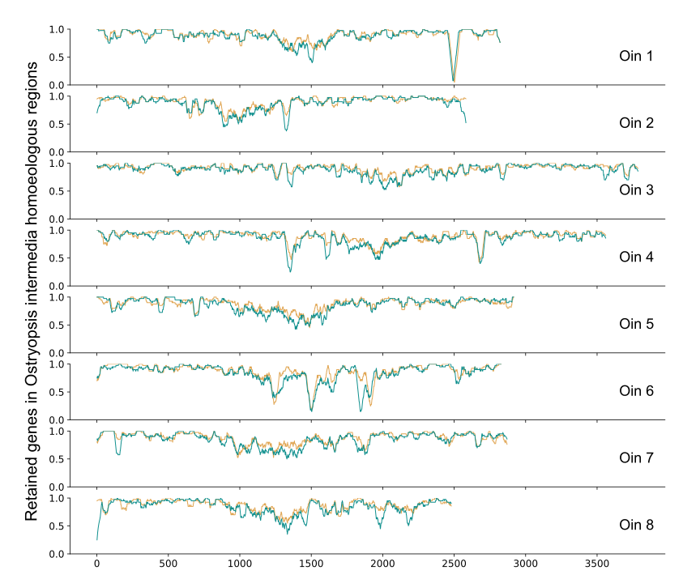

Retain¶
Retain is show subgenomes in gene retention or genome fractionation.
Parameters
Parameters |
Standards and instructions |
alignment |
Type:file | Default: - Output result of parameter a |
colors |
Type: { color1,color2,color3,– } Default: red,blue,green Set multiple sets of colors based on grouping, split with a comma. |
refgenome |
Type: str | Default: - A short handbook of reference species. |
figsize |
Type: int,int | Default: 10,10 Control the proportion of the size of the saved picture. |
step |
type: int | Default: 50 The size of the sliding window. |
ylabel |
Type: str | Default: none The y-axis label of the picture. |
savefile |
Type:file | Default: - Results of the drawing. |
savefig |
Type: {*. png,*. pdf, *. svg} | Default: *. png Save pictures support png, pdf, svg formats. |
Use command to enter the folder wgdi -r ? >> total.conf Take out the parameter file.
[retain]
alignment = alignment file
gff = gff file
colors = red,blue,green
refgenome = shorthand
figsize = 10,12
step = 50
ylabel = y label
savefile = retain file
savefig = result
Quick start
After the parameters are modified properly, then run wgdi -r total.conf
Example
The original results are easily accessible at wgdi-example
